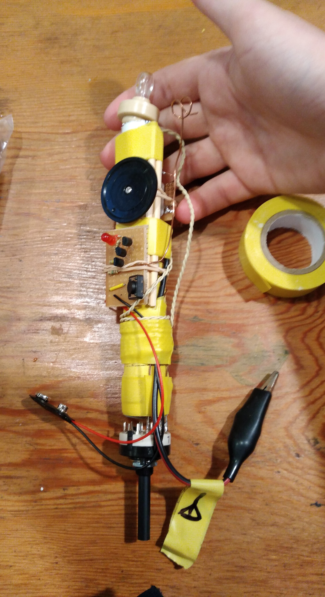

Mid way through high school I was keen to learn more about radios and Electomagnetism in general. I had done my own research and was slowly pursuing the calculus required to use Maxwell's equations (though it would take me several years to have have that much maths). To test my understanding I decided to build a device which incorporated both a crystal radio and a general purpose EMR detector.
The crystal radio was the first thing I built. I didn't want to use a kit or recycle an old one, as I wanted to build it from the base up. After doing the the relevant calculations I made my inductor by winding thin copper wire around a PVC pipe, the shaving the enamel coating of patches and soldering wires onto them.

The assembly of the rest of the Crystal Radio was quite simple. I ran these wire taps down to one end of the inductor, then soldered them onto a sort of rotary switch, so I could easily switch between ranges. I soldered the variable capacitor on to the other end of the inductor, soldered an aligator clip to where the antenna would be, then soldered port for the the Crystal earpiece in and a few other parts as well.

After I set up a wire antenna hanging from the shed gutter I was able to clip the device on and listen to local radio stations (with a lot of static and interference).

Having (largely) completed the crystal radio I moved on to the second component. This circuit was quite simple. It had an small copper antenna which fed directly in to a multi-stage transistor amplifier to an LED. This way when it was held near a strong oscillating EM field the LED would Light up!
Once the two components were complete I combined them in to the one device. The earpiece was located on the top of the device so the by clipping the alligator clip to an antenna and holding it up to your ear - you could listen to the radio. The second device's earpiece was wound into a coil then kept at the same end as the earpiece.
I didn't make a case for it, as I had always intended the project to be about learning about radios and Electromagnetism in general. It was ugly, but I didn't mind the rugged look, and it held together surprisingly well.
